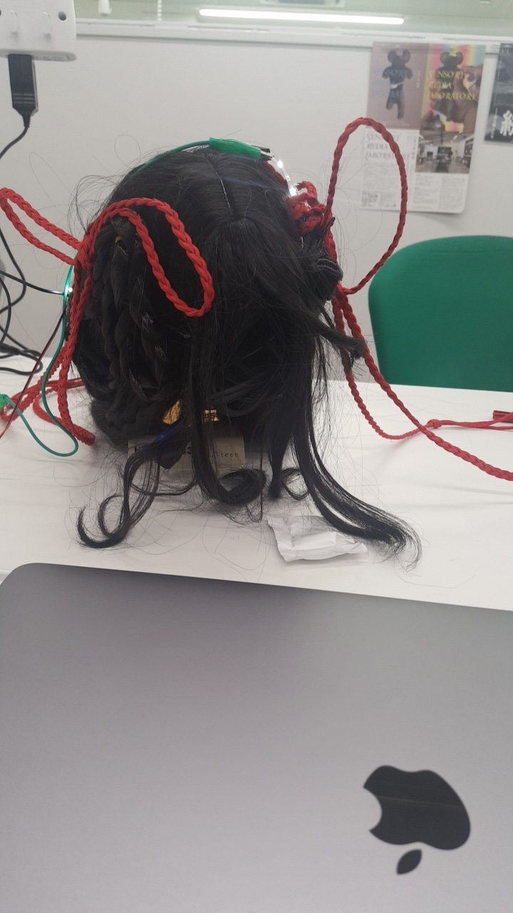

ゆるいサーキットーmicrobit
「光らないものを光らせる」
ペアを組んで髪の毛を光らせることにした。
私たちは、microbitをつかをうとした。
「ひかる髪の毛」
microbitの使い方はわかったけど、髪の毛を光らせるには適切ではなかったため、長細いLEDも使うことになった。
LEDだけを使ったらよかった、、！
はじめにmicrobitを使うことを決めたから、LEDと一緒に使ったが、電圧が違って壊れてしまった。

完成はできたけど、microbitの代わりに普通のスイッチでもよかったものだった。
そこを早めに築いてmicrobitを使わなかったらよかった。
microbitが、曲げれるものだったらもっと色んなものになれるんじゃないかなと思った。
そんな簡単なものではないとわかってるけど、便利そうだ。